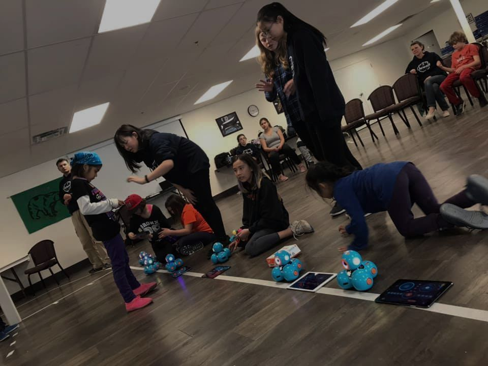
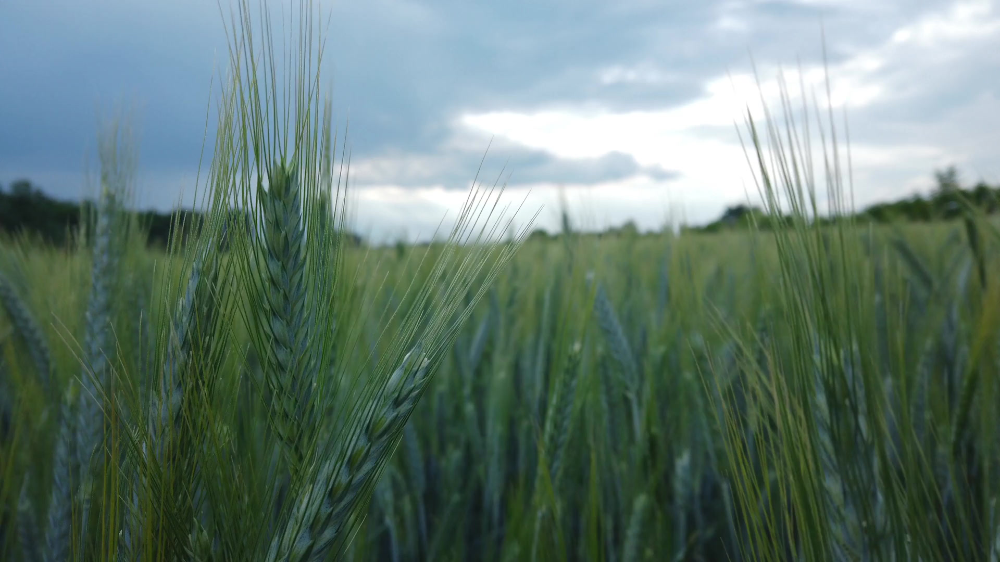
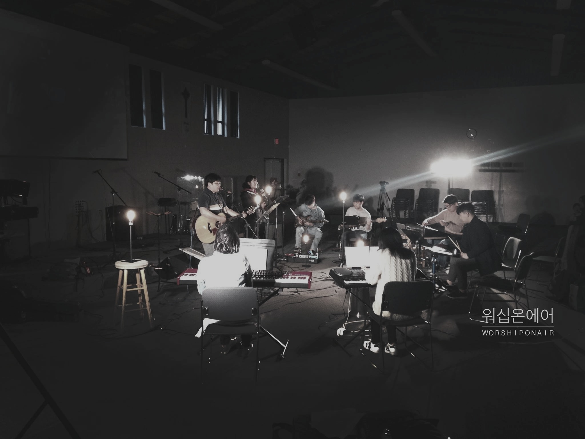
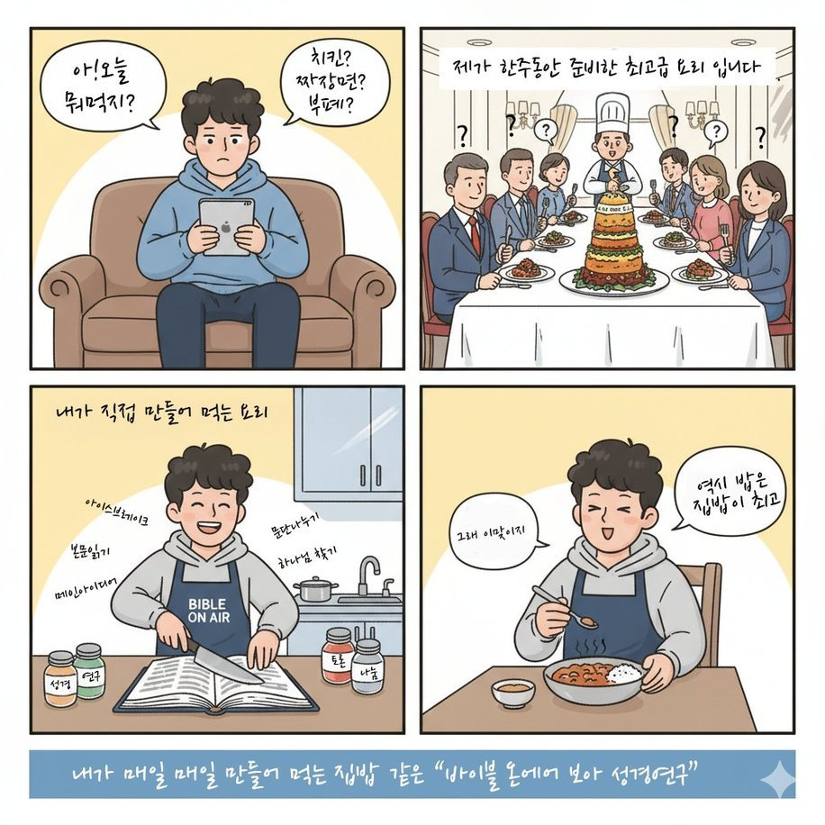

하이브리드 쳐치플랜팅 연구소
우리는 하이브리드 쳐치플랜팅을 위한 플랫폼을 만들고, 필요한 콘텐츠를 꾸준히 제작하고 나눕니다.
하이브리드 쳐치플랜팅 네트워크
우리는 다양한 방식의 하이브리드 쳐치플랜팅을 통해 캐나다 BC주 지방 도시의 한인들이 신앙 공동체를 세우도록 돕습니다.
→ 하이브리드 쳐치플랜팅예배 · 말씀 · 아웃리치



우리가 존재하는 이유
우리는 언제나, 어디서나, 누구나 제자 삼는 공동체를 세우고 성장시킬 수 있도록 존재합니다.
이를 위해 우리는 여러 장애물을 넘어서는 혁신적인 사역 방법을 시도하는 것을 두려워하지 않습니다.
언제나 어디서나 누구나!
워십온에어의 비전은 쳐치플랜팅이 어려운 환경에서도 언제나, 어디서나, 누구나 예수 그리스도를 따르는 신앙 공동체를 쉽게 시작하고 이끌 수 있도록 돕고 세워주는 것입니다.
창의적이고 혁신적인 접근으로 유기적인 쳐치플랜팅 운동이 일어나는 생태계를 만들어 갑니다.
우리는 하이브리드 쳐치플랜팅을 위한 플랫폼을 만들고, 필요한 콘텐츠를 꾸준히 제작하고 나눕니다. 우리는 하이브리드 쳐치플랜팅 모델을 개발하고, 하이브리드 쳐치플랜팅 운동을 일으키기 위해 다양한 방식을 실험하는 데 헌신합니다.
우리가 지키는 것
이준호 목사
한국의 기독교 가정에서 태어나 자랐으며, 2002년 밴쿠버로 이주했습니다.
전기공학과 방송 분야 디플로마를 받았고, 신학 학사(BA)와 타문화 사역 석사(MA) 학위를 취득했습니다.
아웃리치에 대한 열정으로 세계 곳곳에서 아웃리치 사역을 해왔습니다. 기독교 학교에서 8년간 IT 담당으로 일했고, 20년간 지역 교회를 목회자로 섬겼습니다.
2014년부터 릴루엣 지역의 원주민(First Nations) 공동체와 함께하며 섬기고 있습니다.
jlee@worshiponair.com함께하는 동역 기관
예배를 심습니다
예배가 없는 곳에, 공동체가 시작되도록워십온에어는 예배가 없는 곳에 예배를 심고 공동체를 세워 갑니다.
캐나다 도시 외곽처럼 가까운 곳에 한인 교회가 없는 지역에서는 예배를 드리는 일 자체가 쉽지 않습니다. 워십온에어는 예배하기 어려운 환경에 있는 공동체가 조금 더 쉽게 예배할 수 있도록 오랫동안 여러 방법으로 노력해 왔습니다.
예배를 대신해 주는 것이 아니라, 그곳의 공동체가 스스로 예배하며 자라 가도록 돕는 것이 우리의 방향입니다.
콘텐츠 제작과 보급
원거리의 작은 한인 공동체를 위해원거리에 사는 작은 한인 공동체를 위해 디지털 설교와 예배 콘텐츠를 꾸준히 제작하고 보급합니다.
현장 모임을 인도하는 사이트 리더가 어려움 없이 예배를 이끌 수 있도록, 한국어 예배와 설교 영상을 준비해 전달합니다.
이를 더 잘 돕기 위해 AI 기반 예배 인도 도구도 준비하고 있습니다.
찬양집회와 협업
함께 예배하는 자리를 만듭니다정기적으로 찬양집회를 열어, 지역 교회와 크고 작은 예배팀이 함께 예배할 수 있는 자리를 마련합니다.
지역 찬양팀의 예배 콘텐츠를 제작하는 사역도 하고 있어, 예배팀이 자신들의 찬양을 영상과 음원으로 남기고 나눌 수 있도록 돕습니다.
밴쿠버 지역의 예배팀과의 협업을 기다리고 있습니다. 함께하고 싶은 팀이 있다면 언제든 연락해 주세요.
다음 세대를 위한 실험
교회 안에 머무는 예배를 넘어서교회 안에 머무는 예배의 형태를 넘어, 다음 세대 젊은 세대를 위한 EDM 워십과 같은 실험적인 예배를 시도하려고 준비하고 있습니다.
익숙한 형식에 갇히지 않고, 젊은 세대가 자신의 언어와 음악으로 예배할 수 있는 길을 찾아 갑니다.
워십온에어에게 아웃리치는 계절 행사나 사역의 일부가 아니라 사역 전체의 핵심 가치이자 DNA입니다. 아웃리치가 없었다면 워십온에어도 없었을 것입니다.
워십온에어는 설립자 이준호 목사가 아웃리치를 통해 캐나다 도시 외곽 원주민 공동체의 필요를 마주하면서 시작되었습니다. 그 필요에 응답할 방법을 찾던 중 BC주 외딴 지역에 사는 한인들과 연결되었고, 이것이 사역의 출발이 되었습니다.
아웃리치는 모임을 키우거나 프로그램을 늘리는 일이 아닙니다. 이웃 사랑을 실천하고, 우리가 속한 공동체를 섬길 의미 있는 방법을 찾는 일입니다.
레벨스톡 & 캐슬가
매년 여름 BC주 레벨스톡과 캐슬가의 한인 공동체를 방문해 현지 가정들과 예배하고 교제하며, 어린이를 위한 여름성경학교를 엽니다.
도시 외곽의 원주민 공동체를 섬깁니다
워십온에어는 Indigenous Outreach Society of Canada와 협력하여 BC주 릴루엣 일대를 중심으로 원주민 공동체를 돕고, 건강하고 활기찬 공동체를 세워가고 있습니다.
2024년에는 릴루엣에 현지 선교사를 파송하고, 지역 교회들과 협력하여 원주민 신앙 공동체를 세우기 시작했습니다.
파트너 되기 →
모든 성도는 하나님의 말씀인 성경을 먹어야 합니다. 하나님의 자녀로서 말씀을 양식으로 삼는 것은 너무나 당연한 일입니다. 그러나 성경에 대한 많은 오해와 잘못된 접근이 신앙생활의 이 핵심을 방해하곤 합니다. 세상의 빛의 자녀로 부름받은 우리가 말씀을 먹지 않는다면, 하나님의 자녀 된 기쁨을 누리지 못한 채 영적 굶주림과 목마름, 영적 가난 속에 살게 될 것입니다.
하나님의 자녀 된 정체성을 온전히 누리려면 모든 성도가 말씀을 먹어야 합니다. 성경은 생명을 주는 영의 양식입니다. 또한 성경을 통해 우리는 어두운 세상 속에서 빛의 자녀로 밝게 살아갈 힘을 얻습니다.
BOA 성경공부 공동체는 시간과 장소의 한계를 넘어, 언제나 어디서나 누구나 성경을 공부하고 말씀을 통해 하나님의 자녀로서 풍성한 삶을 누리도록 돕는 성경공부 모임입니다.
성경을 처음 접하는 분이든 오래 공부해 온 분이든 BOA는 모두를 똑같이 환영합니다. 함께 말씀을 읽고 공부하고 나누며, 성경에 드러난 하나님의 뜻을 온전히 깨닫도록 서로 돕습니다.
BOA는 매주 정해진 본문에 집중합니다. 참여자들은 체계적인 성경공부 방법으로 매일 본문을 공부하고, 온라인 협업 도구로 깨달음과 묵상을 나누며, 온라인·오프라인 모임을 통해 말씀 안에서 하나님의 풍성한 은혜를 경험합니다.
BOA 성경공부 공동체에 참여하고 싶으시면 아래 신청서를 작성해 주세요.
신청하기 →말씀 안에서 함께 자라 가는 공동체에 여러분을 초대합니다.
바이블온에어는 성경을 지식으로 쌓는 데 그치지 않고, 말씀을 함께 읽고 나누며 공동체를 세워 가는 성경공부입니다. 일주일에 한 번 모이는 자리에서 끝나지 않고, 한 주 내내 서로의 깨달음과 묵상을 나눕니다.
성경을 처음 접하는 분도, 오래 공부해 온 분도 환영합니다. 시간과 장소에 구애받지 않고 말씀 앞에 함께 서는 이 여정에 동참해 주세요.
제요한 목사 · 바이블온에어 디렉터우리는 하이브리드 쳐치플랜팅 모델을 개발하고, 하이브리드 쳐치플랜팅 운동을 일으키기 위해 다양한 방식을 실험하는 데 헌신합니다.
쳐치플랜팅 연구소는 언제나, 어디서나, 누구나 신앙 공동체를 시작하고 이끌 수 있도록 워십온에어가 효과적인 방법을 연구하고 실험하며 나누는 곳입니다.
워십온에어 실시간 AI 설교번역기는 일반 번역기가 아닌 설교 전용 번역기입니다. 무엇보다 설교의 메시지가 온전히 전달되는 것을 최우선으로 설계했습니다.
대부분의 사용자들이 “설교 메시지를 이해하는 데 큰 도움이 된다”는 피드백을 보내주셨습니다.
개발 이야기워십온에어는 2016년부터 캐나다 도시 외곽에 사는 한인들의 신앙생활을 돕는 사역을 해 왔습니다. 외곽 지역 성도님들이 꼽은 가장 큰 어려움은, 지역 캐나다 교회에 출석하면서도 언어의 한계로 설교를 이해하지 못한다는 것이었습니다.
그래서 워십온에어는 여러 해 동안 예배 영상과 설교 영상을 직접 제작해 보내며 현지 한인들이 예배할 수 있도록 도왔고, 현지 교회의 설교를 받아 번역 자막을 제공하는 사역도 함께 해 왔습니다.
그리고 이 문제의 장기적인 해결책으로, 인공지능을 활용한 실시간 설교번역기를 개발하게 되었습니다.
2025년, 정부의 여름 일자리 지원금을 받아 소외된 지방 공동체의 언어 장벽을 해소할 AI 기반 모바일 앱을 개발하기 시작했습니다. AI·데이터 과학 분야 시니어 엔지니어 두 명의 자원봉사 지도 아래 컴퓨터공학 전공 학생 두 명이 영어 설교를 실시간으로 한국어 텍스트로 번역하는 서비스를 만들고 있습니다.
이 앱은 언어 문제로 지역 예배 공동체에 참여하기 어려운 외딴 지역의 소수 그룹을 위한 것입니다. 누구나 쓸 수 있도록 가벼운 화면, 오프라인 기능, 스크린 리더 호환을 갖추었고, 한국어를 시작으로 스페인어·중국어 등으로 확장할 수 있도록 설계했습니다.
실시간 AI 설교번역기와 함께하는 교회
함께 예배하게 된 이야기
{{ rv.quote }}
우리 동네 한인 이민자들에게 다가가고 싶으신가요? 저희가 도와드리겠습니다!
문의하기 →